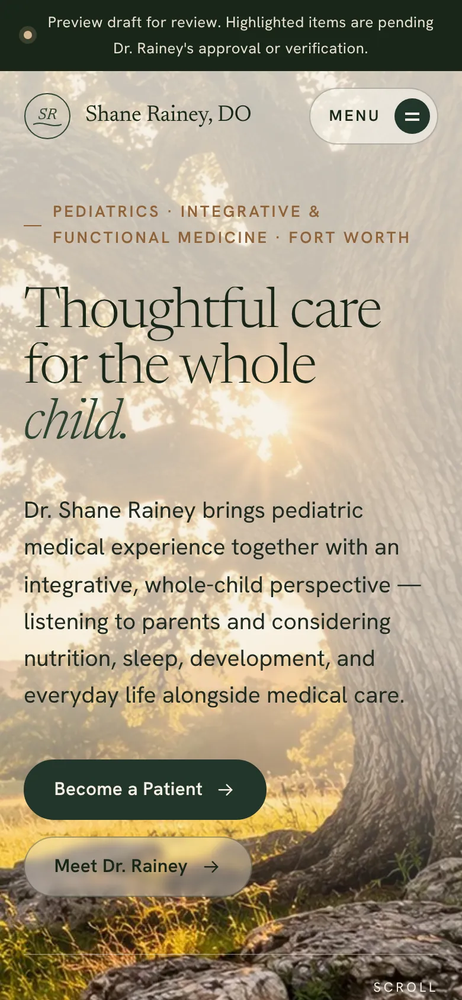
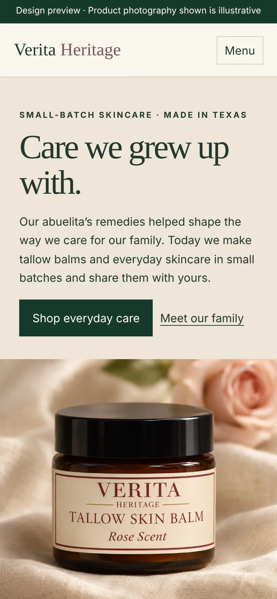

01Work
Websites built around the business
Every project here started with a conversation about how the business earns trust. Each case study explains what the owner needed, what I built, and why. These are previews built with each owner, and each one is labeled with where it stands.
-


01
Shane Rainey, DO
PreviewA calm, editorial website for a Fort Worth pediatrician who looks at the whole child, built so parents can understand his approach and take the next step.
-


02
Call Revere
Redesign previewA redesign for an Irving heating and air company that connects what is going wrong at home to the right service, the right city, and a phone call.
-


03
Verita Heritage
Design previewA storefront for a Texas family's small-batch tallow skincare that carries the warmth of their abuelita's remedies into product pages and guides.
-


04
Obst Farm
PreviewA three-page site for a Fort Worth family farm that answers the two questions customers ask first: what do you sell, and where do I get it?

Tell me about your business
If your business does good work and your website doesn’t show it yet, let’s talk about what it could look like.